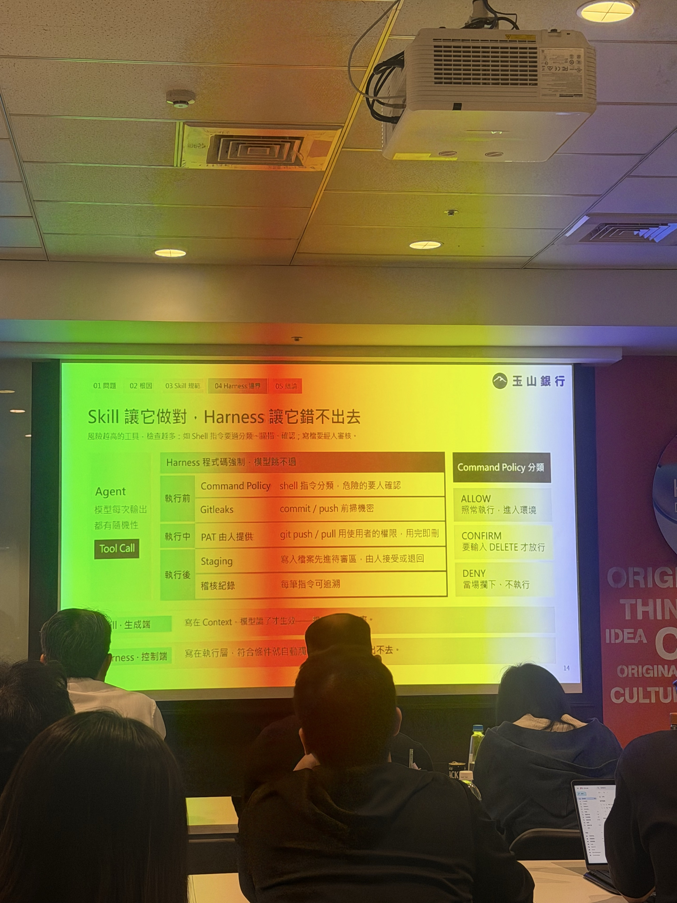

Soft constraint · 規範與上下文
Prompt → Rules → Skills → Development guidance
Enforced constraint · 工具執行邊界
Agent intentSkill／Prompt
Output: Tool Call
Output: Tool Call
→
Harness checksCommand Policy · Gitleaks
PAT／Permission · staging
PAT／Permission · staging
→
Execution實際執行或阻擋
ALLOW低風險、符合分類
CONFIRM人工核准後放行
DENY不符合政策，不執行
每個結果都寫入 Audit。 本 Repository 沒有可重跑 Harness／Policy Artifact；此頁呈現課堂方法，不宣稱已落地。